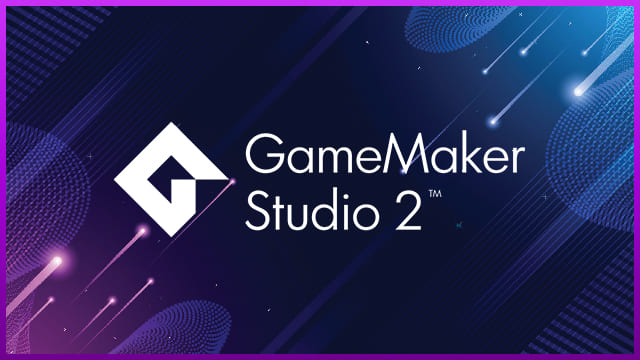

| HISTORIA DE GAME MAKER | ENLACES / LINKS |
|---|---|
|
Game Maker es un motor para el desarrollo de videojuegos, enfocado principalmente en el desarrollo 2D, no obstante, también es capaz de desarrollar títulos en 3D pero su fuerte en sí es el ámbito 2D. Este software cuenta con más de 20 años de trayectoria ya que fue lanzado por primera vez, bajo el nombre de Animo, en 1999. Al principio se trataba simplemente de una herramienta que ayudaba a estudiantes a crear animaciones, pero, con el paso del tiempo se potenció y se convirtió en una herramienta de desarrollo de videojuegos. Desde entonces, GameMaker Studio ha pasado por varias versiones. De hecho, en su lanzamiento oficial en 2004, se le conocía simplemente como GameMaker. Bajo esta denominación el sistema contó con 8 versiones, que fueron lanzadas entre 2004 y 2011. En 2012 se lanza la primera versión de GameMaker Studio. Una herramienta más completa, profesional y con más posibilidades de las que ofrecía GameMaker. Finalmente, en 2016, YoYo Games, lanza la última versión disponible de esta herramienta: GameMaker Studio 2. |

|